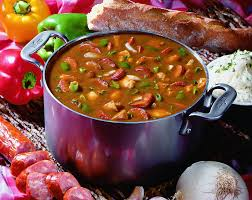

Gumbo
Home

Description
Gumbo is a delicious soup that can be made with
a variety of ingredients. This easy to follow
recipe goes great with steamed rice.
Ingredients
- Flour - 1 Cup
- Oil - 1 Cup
- Garlic
- Onion
- Celery x2
- Carrots x2
- Andouille Sausage x4
- Chicken Breasts x3
- Salt
- Pepper
- Onion Powder
- Garlic Powder
- Creole Seasoning
- Chicken Broth
Steps
- Dice the onion and set aside
- Dice the celery and set aside
- Dice the garlic and set aside
- Chop the carrots and set aside
- Slice the sausage and set aside
- Place some olive oil in the pot and
let it get warm
- Add 3 Chicken breasts to the pot
- Heavily season the chicken with Salt,
Pepper, Onion Powder, Garlic Powder,
and Creole Seasoing
- Sear the chicken on both sides and
remove from the pan
- Dice the chicken and set aside
- Add the oil and flour to the pot
- Using a ladel stir the pot continuously
until the mixture forms a dark chocolate
color
- Add the Onions, Garlic, Celery, Carrots,
Sausage, and Chicken to the pot
- Stir the mixture together until the roux
forms a muddy texture on the meat and
veggies
- Add the chicken broth to the pot
- Season heavily with Salt, Pepper, Garlic
Powder, Onion Powder, Italian Seasoning,
and Creole Seasoing
- Bring the Gumbo to a rolling boil
- Slowly lower the temperature and simmer
for an hour or longer. The longer it cooks
the better it tastes!
- Serve with steamed rice